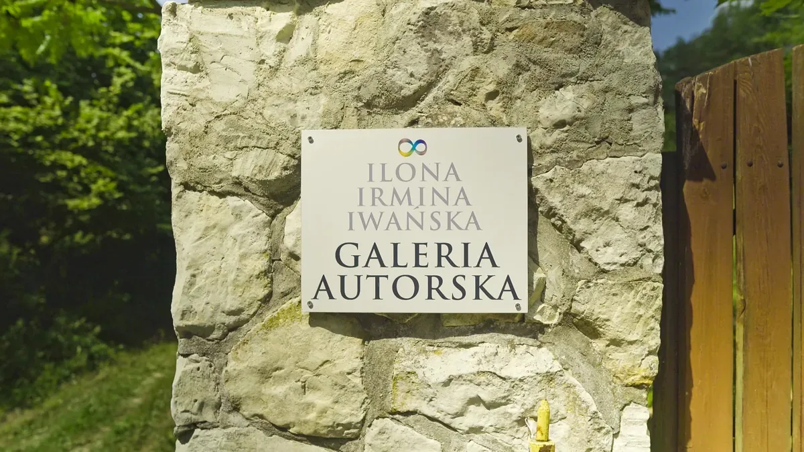
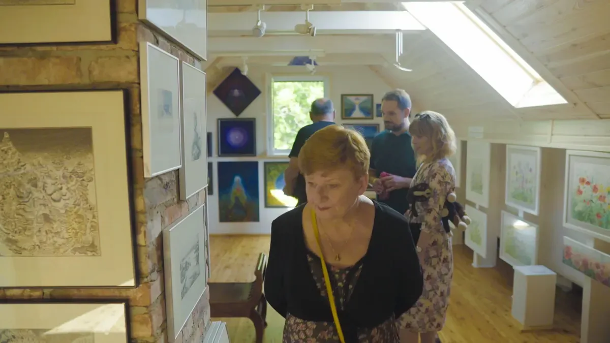
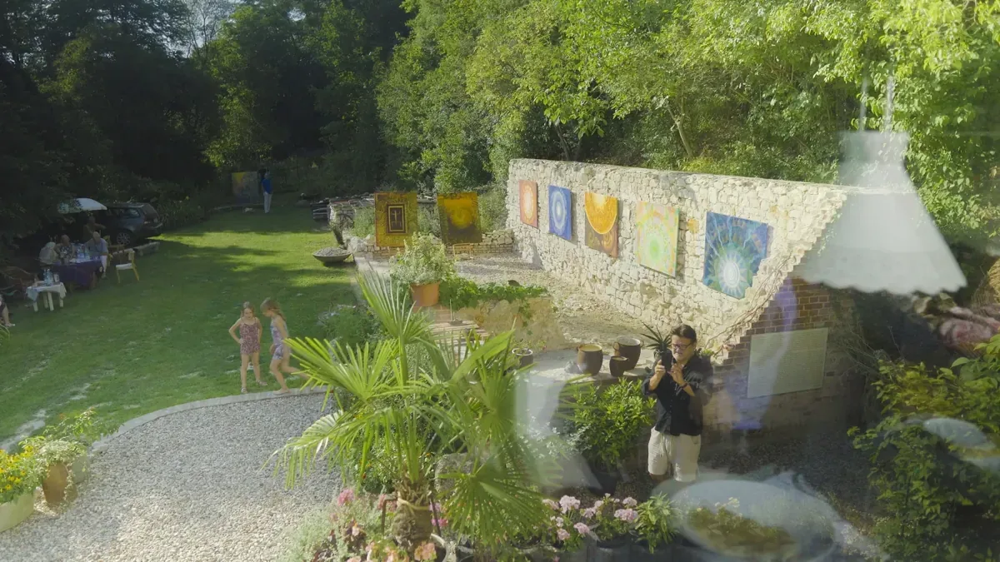

Galeria w Rogowie
W Rogowie, 7 km od Kazimierza Dolnego, mam pracownię i galerię autorską. Tu powstają obrazy i tu zapraszam na wernisaże, także podczas Festiwalu Filmu i Sztuki Dwa Brzegi.
- Miejsce
- Rogów, gmina Wilków dokładny adres do uzupełnienia
- Wizyta
- po wcześniejszym umówieniu, napisz do mnie


